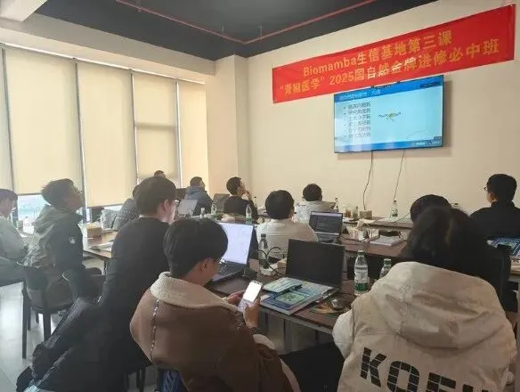
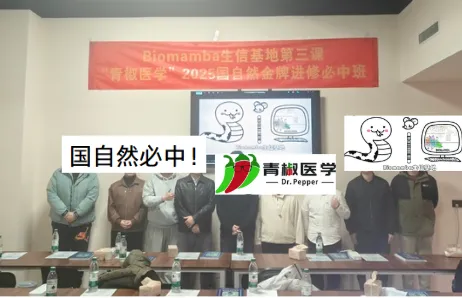

2025国自然申报秘籍大放送！青椒医学大咖亲授
原文：https://mp.weixin.qq.com/s?__biz=MzAwMzIzOTk5OQ==&mid=2247526009&idx=1&sn=724a8a92d27c83a2c7f6e283c9957584&chksm=9b3c1f29ac4b963f1e5379edd27ed348e47bd110f58ab113c5958b281e041b8d2aca1c362ba8#rd 合集：生信基地
生信基地第三课


想了很久的生信基地已经落地，我们在积极探索为大家提供全栈的科研帮助，而不仅限于生信教学。
这次我们邀请到青椒医学团队(主讲老师青椒医学许老师，陈老师)完成了12月22日下午(上周日)13:30~17:30带来"国自然标书写作技巧"主题讲座。
课表如下：

现已把全部课程PPT 整理打包，并录制了视频回放 ，大家可以添加客服免费领取。
已有生信基地联系方式的同学无需重复添加

课程总结 课程介绍课程分为三部分，这里给大家进行一下简单的总结，需要课程回放和PPT请添加客服微信领取哦~
第一节：《2025国自然申报策略和标书撰写技巧分享》 ，深入阐述标书撰写的重要意义，涉及大数据分析与认知策略普及等方面。重点围绕国自然申报改革要点展开，详细解读政策变化、中标要素、热点方向及撰写技巧，着重强调标书的创新性、逻辑性和内容丰富性，还对评审流程、中标要素及评审意见处理进行了深入讲解。
** **
第二节:《基于文献检索设计CNS子刊级别国自然思路》 ，聚焦于国自然项目创新性挖掘与特色打造。老师们深入剖析过往中标项目的创新思路，引导大家从不同学科交叉、前沿技术应用等角度探寻创新方向。并且从研究方法优化、研究视角独特性等给予实用建议，还指导学员在有限篇幅内精准清晰阐述创新点与特色，吸引评审目光。围绕构建严谨研究框架展开，确保研究过程严密，增强标书说服力。
第三节：《如何创新性地设计 2025 年国自然假说》 ，深入探讨国自然基金申报中科学假说设计的方法与策略。推荐了设计假说时可使用的工具，并详细阐述单细胞分析在课题设计中的应用。通过具体项目案例，如 CD226 调控铁死亡途径促进 T 细胞衰老研究及细胞器互作在能量代谢异常中的作用研究，展示创新设计模式与逻辑。强调选择表达上调的主角分子，将研究落脚点置于细胞器功能以提升课题创新性。此外，还探讨结合公共数据库进行单细胞分析对课题设计创新性和可行性的提升作用，最后提供结合单细胞分析设计国自然课题的详细思路与建议。
活动现场
活动进行中~

课后留影~

青椒哥有话说
致国自然赶路人
在生命科学部与医学部的国自然申报领域深耕八年 ，我们团队已经协助200多位 科研人员实现了国自然资助 的梦想。期间，我们经历了非编码RNA和m6A 的研究热潮，也曾探索人工智能 和机器学习 在生命科学研究中的应用潜力。一路上，我们感受到了合作老师们获得资助后的激动，也与名落孙山的科研人共情。毕竟目前国自然医学部为例，平均中标率 已经下降到了11.6% ，何况热门的H18肿瘤口、运动医学、呼吸口等，竞争尤其惨烈 。如此，我团队最大的感受：国自然不变的中标特征就是一直在“求变”、“内卷”，为何要一直“求变”？创新 是核心：紧扣自由探索与目标导向国自然的核心在于创新。这种创新不仅仅停留在表面，而是要扎实地基于“自由探索”和“目标导向”两大准则，深入挖掘有价值、亟待解决的科学问题。创新的具体表现包括：(1)科学问题创新 ：提出新颖而有意义的科学问题。(2)分子创新 ：挖掘新的分子或靶点，并探讨其作用机制。(3)机制创新： 探索新颖的分子和细胞机制。(4)表型新 ：在实验设计和表型展示上展现新的视角。(5)技术手段新 ：使用先进或新兴的技术手段。(6)多组学角度新 ：从多组学的角度揭示疾病或病理过程。面对国自然的内卷，这种多层面的创新才是脱颖而出的关键。底子与圈子：双重实力的综合考验但是国自然又不单单只是本子写得好就可以了，还需要“底子和圈子”作为基本盘，因为你还需要向国自然专家证明，你拥有足够的实力结题。底子指的是你得5年内，一作或者通讯作者的代表作 ，是否是博士；圈子指的是你的导师、依托单位、同行认可度（学术会议露脸多寡）。代表作质量的重要性但是圈子这个因素，我们很难短时间内改变，个人认为我们从功利角度讲，从“本子”和“底子”角度提升是最佳策略。而本子的创新性其实是基于文章的延续性 的，没有延续性，创新就无从谈起。底子需要有一篇中科院二区甚至一区的非水刊和预警期刊的论著，这个筹备的周期需要精确规划到1.5年内完成，否则男性青年申请人很容易超过35周岁 ，毕竟博士毕业基本上都31、32岁了。我们都知道国自然需要典型的4组图：多组学分析、体内、体外、分子表征，多组学分析指的是什么呢？多组学分析：多角度探讨微环境的独特视角如今，国自然申报中的多组学分析 成为一大亮点。典型的国自然申报需要具备四组图：多组学分析、体内实验、体外实验以及分子表征。这些图表展示的不仅仅是研究结果，更是申请人对科研问题的多维度解读和探索能力。多组学分析：包括单细胞转录组 、蛋白组、单细胞代谢 组和空间 转录组等。这些技术手段帮助科研人员从组织微环境的角度揭示关键靶基因和通路在疾病或病理现象中的作用机制。此种创新的独特视角不仅能提升SCI的论文影响因子和分区，更可以提升国自然本子的创新级别和可行性。既然国自然是绕不开的高山，那就勇敢、扎实迈出每一步，全方位地以多组学测序分析为出发点，从本子和底子上，精心打扮自己一番，用“0差评 ”的标准要求自己去准备2025年国自然申报季，念念不忘必有回响。——青椒医学团队** **
如何联系我们

 公众号后台消息回复不便，这里给大家留一下客服微信号 ，方便各位随时交流、提建议（别问在么，添加时直接说来意）。此外呼声一直很高的交流群 也建好了，欢迎大家入群讨论：
公众号后台消息回复不便，这里给大家留一下客服微信号 ，方便各位随时交流、提建议（别问在么，添加时直接说来意）。此外呼声一直很高的交流群 也建好了，欢迎大家入群讨论：
大家可以阅读完这几篇之后添加给生信入门初学者的小贴士 如何搜索公众号过往发布内容
已有生信基地联系方式的同学无需重复添加
 您点的每个赞和在看，我都认真当成了喜欢
您点的每个赞和在看，我都认真当成了喜欢